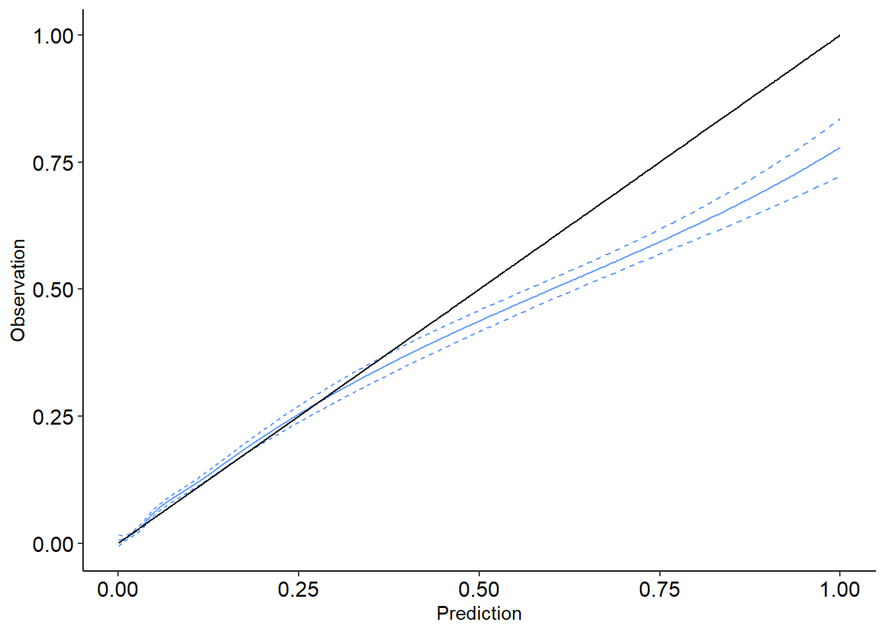
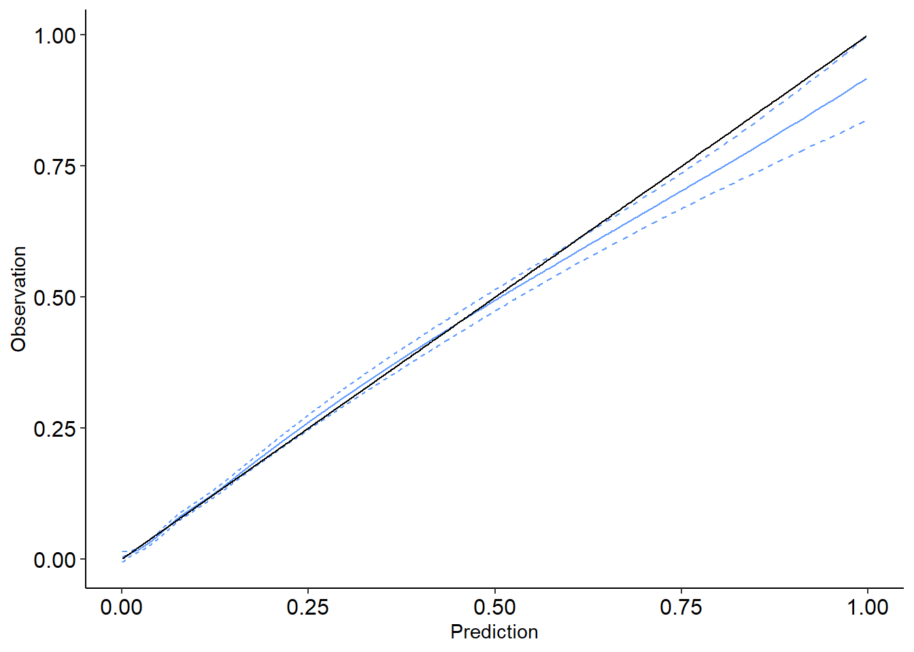

library(knitr)
source('case_study.R')Case Study
Cast Study (GUSTO-I)
2024.03.15
Running Code
Data size:
| dataset | n_obs | EY | Epi1 | Epi2 |
|---|---|---|---|---|
| dev_data1 | 500 | 0.07 | NA | NA |
| dev_data2 | 17796 | 0.0722634299842661 | NA | NA |
| val_data1 | 500 | 0.062 | 0.0699854621613361 | 0.0699854405483402 |
| val_data2 | 23034 | 0.0679430407224103 | 0.0689847925283449 | 0.0695058071086448 |
Model coefficients
Model 1 (small dev)
#summary(model1)
round(coefficients(model1),3) (Intercept) age milocOther milocAnterior
0.365 0.076 0.460 0.157
pmiyes kill pmin(sysbp, 100) pulse
0.349 1.351 -0.103 0.020 Model 2 (full dev)
#summary(model2)
round(coefficients(model2),3) (Intercept) age milocOther milocAnterior
-2.084 0.078 0.403 0.577
pmiyes kill pmin(sysbp, 100) pulse
0.468 0.767 -0.077 0.018 AUCs
res12$aucArea under the curve: 0.8099res22$aucArea under the curve: 0.8144Calibration resuls:
Small dev, full val (12)
plot(res12$calib$calibration_plot)plot(res12$scalib)
plot(res12$cumul_calib,method="BM",y2axis=F)summary(res12$cumul_calib,method="BM")C_n (mean calibration error): -0.00104175180593455
C* (maximum absolute cumulative calibration error): 0.00421961645987535
Method: One-part Brownian Motion (BM)
S* (test statistic for cumulative calibration error): 2.81511520967912
p-value: 0.00975195002512808
Location of maximum drift: 21623 | time value: 0.752446499725158 | predictor value: 0.231769680615466plot(res12$cumul_calib, method="BB",y2axis=F)summary(res12$cumul_calib, method="BB")C_n (mean calibration error): -0.00104175180593455
C* (maximum absolute cumulative calibration error): 0.00421961645987535
Method: Two-part Brownian Bridge (BB)
S_n (Z score for mean calibration error) -0.695004245405677
B* (test statistic for maximum absolute bridged calibration error): 3.33806872142875
Component-wise p-values: mean calibration=0.487052641011851 | Distance (bridged)=4.1937397998737e-10
Combined p-value (Fisher's method): 4.7615706932902e-09
Location of maximum drift: 21623 | time value: 0.752446499725158 | predictor value: 0.231769680615466res12$HL
Hosmer and Lemeshow test (binary model)
data: val_data2$Y, val_data2$pi1
X-squared = 47.141, df = 8, p-value = 1.441e-07One-part test interpretation: Location was at index 21623, corresponding to predicted value 0.0474227 which is at 93.9 percentile. Average bias on the left side: -0.0028751 and on the right-hand side: 0.027054
full dev, full val (22)
plot(res22$calib$calibration_plot)plot(res22$scalib)
plot(res22$cumul_calib,method="BM",y2axis=F)summary(res22$cumul_calib,method="BM")C_n (mean calibration error): -0.00156276638623442
C* (maximum absolute cumulative calibration error): 0.00200906446334097
Method: One-part Brownian Motion (BM)
S* (test statistic for cumulative calibration error): 1.29725651574825
p-value: 0.388886850369088
Location of maximum drift: 15245 | time value: 0.287796643081863 | predictor value: 0.0603447711748232plot(res22$cumul_calib, method="BB",y2axis=F)summary(res22$cumul_calib, method="BB")C_n (mean calibration error): -0.00156276638623442
C* (maximum absolute cumulative calibration error): 0.00200906446334097
Method: Two-part Brownian Bridge (BB)
S_n (Z score for mean calibration error) -1.00908104947695
B* (test statistic for maximum absolute bridged calibration error): 1.02844827843831
Component-wise p-values: mean calibration=0.312935765573505 | Distance (bridged)=0.240744428186226
Combined p-value (Fisher's method): 0.270143602790971
Location of maximum drift: 22402 | time value: 0.888235817046906 | predictor value: 0.333472525720666res22$HL
Hosmer and Lemeshow test (binary model)
data: val_data2$Y, val_data2$pi2
X-squared = 8.812, df = 8, p-value = 0.3584One-part test interpretation: Location was at index 22402, corresponding to predicted value 0.4157849 which is at 97.3 percentile. Average bias on the left side: -0.0022787 and on the right-hand side: 0.0238153